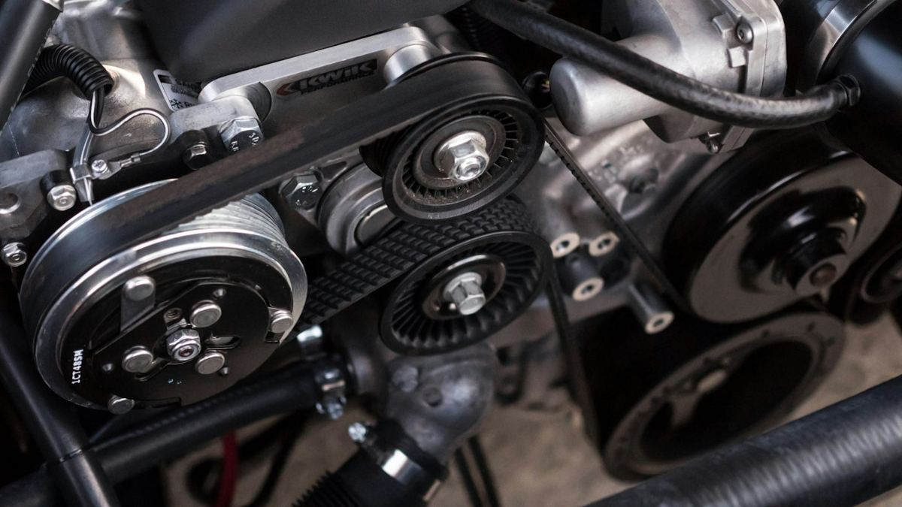
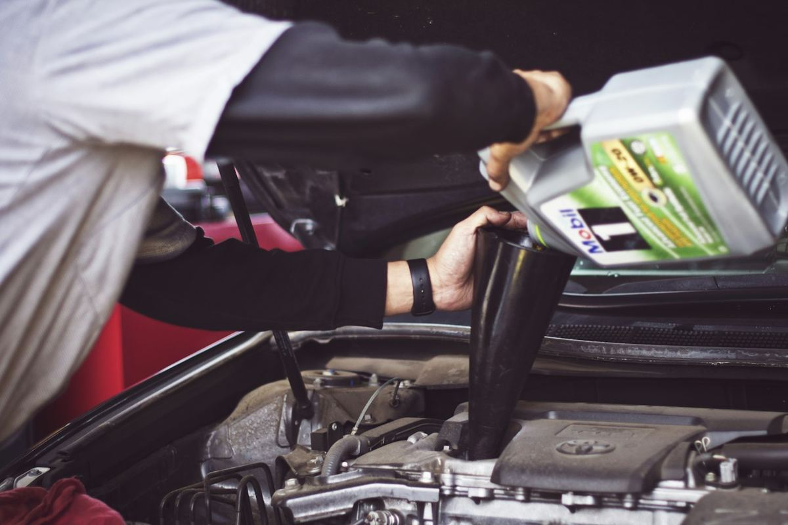

Website Concept: this page is a design preview made to show what a new website for Lazar Imports could look like. It is not the business's live website and it is not client work.
Import auto repair and maintenance in Tulsa, Oklahoma.
Lazar Imports is an import auto repair and maintenance shop in Tulsa. The shop works on Asian import cars and trucks, and it has done that work since 1985. If you drive one of the makes listed below, this is the kind of shop built around your car.
The shop notes it is A+ accredited with the Better Business Bureau.
Questions about your car? Call during shop hours and talk to the shop directly.

Section 01
Lazar Imports focuses on one thing: keeping Asian import vehicles running. The shop's own site describes its work as servicing all Asian imports, with a focus on the makes listed on this page.
Bring the car in, describe what you noticed, and the shop can look at it during regular hours. No online booking is listed, so calling is the way to reach the shop.

Section 02
The following makes are listed on the shop's own website. If your make is not listed here, call the shop and ask.
Address 1330 E 11th St, Tulsa, OK
Phone (918) 587-5009
Monday to Friday 8:00 AM to 5:30 PM
Saturday and Sunday Not listed
Rating: 4.7 stars from 12 reviews (public listing).